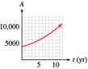
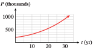
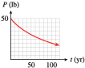
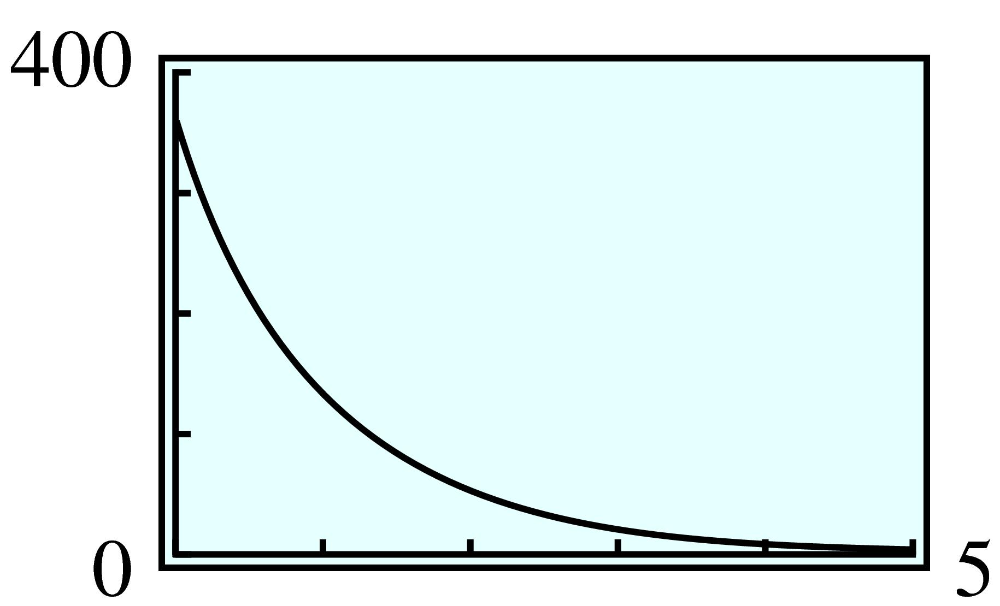
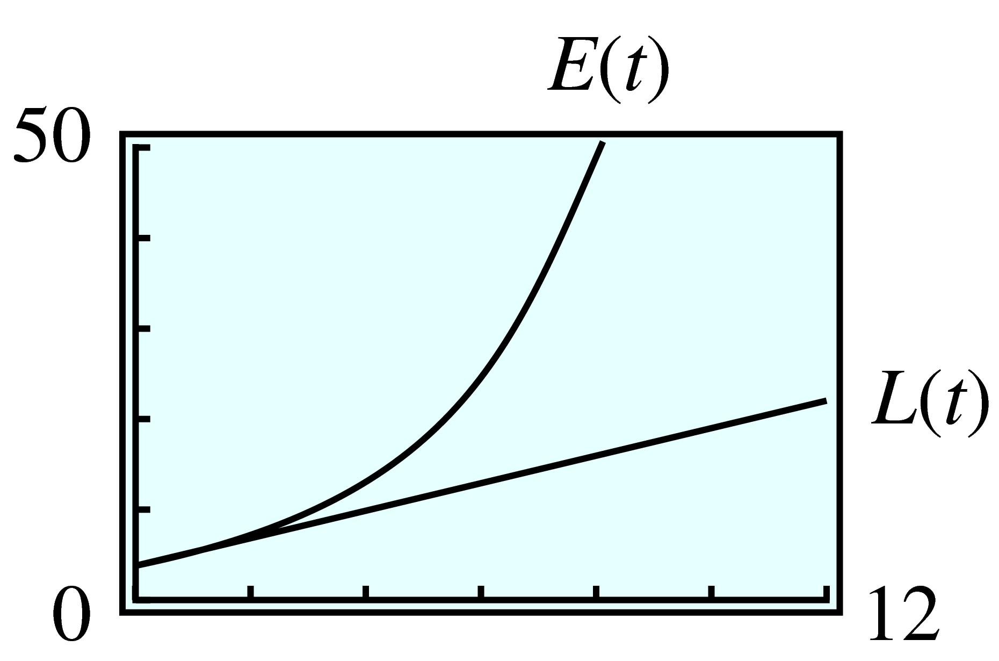

Exercises 2.8 Homework 4.1
¶1.
A parking permit at Huron College cost $\(25\) last year, but this year the price increased by \(12\%\text{.}\) What is the price this year?
If the price of a parking permit increases by \(12\%\) again next year, what will the price be then?
$\(28\)
$\(31.36\)
2.
The computer you want cost $\(1200\) when it first came on the market, but after \(3\) months the price was reduced by \(15\%\text{.}\) What was the price then?
If the price falls by another \(15\%\) next month, what will the price be then?
3.
The value of your stock portfolio fell \(10\%\) last year, but this year it increased by \(10\%\text{.}\) How does the current value of your portfolio compare to what it was two years ago?
It is \(99\%\) of what it was \(2\) years ago.
4.
You got a \(5\%\) raise in January, but then in March everyone took a pay cut of \(5\%\text{.}\) How does your new salary compare to what it was last December?
5.
The population of Summerville is currently \(12\) hundred people.
Write a formula for the population if it grows at a constant rate of \(1.5\) hundred people per year. What is the population after \(3\) years?
Write a formula for the population if it has a constant growth factor of \(1.5\) per year. What is the population after \(3\) years?
\(P = 1200 + 150t\text{;}\) \(1650\)
\(P = 1200\cdot 1.5^t\text{;}\) \(4050\)
6.
Delbert's sports car was worth $\(45,000\) when he bought it.
Write a formula for the value of the car if it depreciates at a constant rate of $\(7000\) per year. What is the value of the car after \(4\) years?
Write a formula for the value of the car if it has a constant depreciation factor of \(0.70\) per year. What is the value of the car after \(4\) years?
7.
Francine's truck was worth $\(18,000\) when she bought it.
Write a formula for the value of the truck if it depreciates by $\(2000\) per year. What is the value of the truck after \(5\) years?
Write a formula for the value of the truck if it depreciates by \(20\%\) per year. What is the value of the truck after \(5\) years?
\(V = 18,000 - 2000t\text{;}\) $\(8000\)
\(V = 18,000\cdot 0.8^t\text{;}\) $\(5898.24\)
8.
The population of Lakeview is currently \(150,000\) people.
Write a formula for the population if it grows by \(6000\) people per year. What is the population after \(2\) years?
Write a formula for the population if grows by \(6\%\) per year. What is the population after \(2\) years?
9.
The table shows the growth factor for a number of different populations. For each population, find the percent growth rate.
| Population | \(A\) | \(B\) | \(C\) | \(D\) | \(E\) |
| Growth factor | \(1.2\) | \(1.02\) | \(1.075\) | \(2.0\) | \(2.15\) |
| Percent growth rate | \(\hphantom{00000}\) | \(\hphantom{00000}\) | \(\hphantom{00000}\) | \(\hphantom{00000}\) | \(\hphantom{00000}\) |
A: \(20\%\text{;}\) B: \(2\%\text{;}\) C: \(7.5\%\text{;}\) D: \(100\%\text{;}\) E: \(115\%\)
10.
The table shows the decay factor for a number of different populations. For each population, find the percent growth rate.
| Population | \(A\) | \(B\) | \(C\) | \(D\) | \(E\) |
| Decay factor | \(0.6\) | \(0.06\) | \(0.96\) | \(0.996\) | \(0.096\) |
| Percent decay rate | \(\hphantom{00000}\) | \(\hphantom{00000}\) | \(\hphantom{00000}\) | \(\hphantom{00000}\) | \(\hphantom{00000}\) |
For Problems 11–16,
Write a function that describes exponential growth.
Graph the function.
Evaluate the function at the given values.
11.
A typical beehive contains \(20,000\) insects. The population can increase in size by a factor of \(2.5\) every \(6\) weeks. How many bees could there be after \(4\) weeks? After \(20\) weeks?
\(P = 20,000\cdot 2.5^{t/6}\)

\(36,840\) bees; \(424,128\) bees
12.
A rancher who started with \(800\) head of cattle finds that his herd increases by a factor of \(1.8\) every \(3\) years. How many head of cattle will he have after \(1\) year? After \(10\) years?
13.
A sum of $\(4000\) is invested in an account that pays \(8\%\) interest compounded annually. How much is in the account after \(2\) years? After \(10\) years?
\(A = 4000\cdot 1.08^t\)
- 
$\(4665.60\text{;}\) $\(8635.70\)
14.
Otto invests $\(600\) in an account that pays \(7.3\%\) interest compounded annually. How much is in Otto's account after \(3\) years? After \(6\) years?
15.
Paul bought a house for $\(200,000\) in \(2003\text{.}\) Since \(2003\text{,}\) housing prices have risen an average of \(5\%\) per year. How much was the house worth in \(2015\text{?}\) How much will it be worth in 2030?
\(P = 200,000\cdot 1.05^t\)
- 
$\(359,171\text{;}\) $\(746,691\)
16.
Sales of Windsurfers have increased \(12\%\) per year since \(2010\text{.}\) If Sunsails sold \(1500\) Windsurfers in \(2010\text{,}\) how many did it sell in \(2015\text{?}\) How many should it expect to sell in \(2022\text{?}\)
For Problems 17–22,
Write a function that describes exponential decay.
Graph the function.
Evaluate the function at the given values.
17.
During a vigorous spraying program, the mosquito population was reduced to \(\dfrac{3}{4} \) of its previous size every \(2\) weeks. If the mosquito population was originally estimated at \(250,000\text{,}\) how many mosquitoes remained after \(3\) weeks of spraying? After \(8\) weeks?
\(P = 250,000\cdot 0.75^{t/2}\)

\(162,380\text{;}\) \(79,102\)
18.
The number of perch in Hidden Lake has declined to half of its previous value every \(5\) years since 1985, when the perch population was estimated at \(8000\text{.}\) How many perch were there in 1995? In 2013?
19.
Scuba divers find that the water in Emerald Lake filters out \(15\%\) of the sunlight for each \(4\) feet that they descend. How much sunlight penetrates to a depth of \(20\) feet? To a depth of \(45\) feet?
\(L = 0.85^{d/4}\)

\(44\%\text{;}\) \(16\%\)
20.
Arch's motorboat cost $\(15,000\) in \(2005\) and has depreciated by \(10\%\) every \(3\) years. How much was the boat worth in \(2014\text{?}\) In \(2015\text{?}\)
21.
Plutonium-238 is a radioactive element that decays over time into a less harmful element at a rate of \(0.8\%\) per year. A power plant has \(50\) pounds of plutonium-238 to dispose of. How much plutonium-238 will be left after \(10\) years? After \(100\) years?
\(P = 50\cdot 0.992^t\)
- 
\(46.1\) lb; \(22.4\) lb
22.
Iodine-131 is a radioactive element that decays at a rate of \(8.3\%\) per day. How much of a \(12\)-gram sample will be left after \(1\) week? After \(15\) days?
In Problems 23–26, use the laws of exponents to simplify.
23.
\(3^x \, 3^4\)
\((3^x)^4\)
\(3^x \, 4^x\)
\(3^{x+4}\)
\(3^{4x}\)
\(12^x \)
24.
\(8^x \, 8^x\)
\(8^{x+2} \, 8^{x-1} \)
\(\dfrac{8^{2x}}{8^x} \)
25.
\(b^{-4t} \, b^{2t} \)
\((b^t)^{1/2} \)
\(b^{t-1} \, b^{1-t} \)
\(b^{-2t} \)
\(b^{t/2} \)
\(1\)
26.
\(b^{t/2} \, b^{t/2} \)
\(\dfrac{b^{2t}}{b} \)
\(b^{1/t} \, b^t \)
27.
Let \(P(t) = 12(3)^t\text{.}\) Show that \(P(t + 1) = 3P(t)\text{.}\)
\(P (t + 1) = 12 (3)^{t+1}= 12 (3)^{t}\cdot 3= P(t) \cdot 3 \)
28.
Let \(N(t) = 8(5)^t\text{.}\) Show that \(\dfrac{N(t + k)}{N(t)}= 5^k\)
29.
Let \(P(x) = P_0 a^x\text{.}\) Show that \(P(x+k) = a^k P(x)\text{.}\)
\(P (x+k) = P_0 a^{x+k} = P_0 a^{x}\cdot a^k = P(x) \cdot a^k \)
30.
Let \(N(x) = N_0 b^x\text{.}\) Show that \(\dfrac{N(x+1)}{N(x)}= b\)
31.
Explain why \(P(t) = 2\cdot 3^t\) and \(Q(t) = 6^t\) are not the same function.
-
Complete the table of values for \(P\) and \(Q\text{,}\) showing that their values are not the same.
\(t\) \(0\) \(1\) \(2\) \(P(t)\) \(\hphantom{000} \) \(\hphantom{000} \) \(\hphantom{000} \) \(Q(t)\) \(\hphantom{000} \) \(\hphantom{000} \) \(\hphantom{000} \)
In the expression \(2\cdot 3^t\text{,}\) only the \(3\) is raised to a power \(t\text{,}\) and the result is doubled, but if both the \(2\) and the \(3\) were raised to the power \(t\text{,}\) the result would be \(6^t\text{.}\)
\(t\) \(0\) \(1\) \(2\) \(P(t)\) \(2\) \(6\) \(18\) \(Q(t)\) \(1\) \(6\) \(36\)
32.
Explain why \(P(t) = 4\cdot \left(\dfrac{1}{2}\right)^t\) and \(Q(t) = 2^t\) are not the same function.
-
Complete the table of values for \(P\) and \(Q\text{,}\) showing that their values are not the same.
\(t\) \(0\) \(1\) \(2\) \(P(t)\) \(\hphantom{000} \) \(\hphantom{000} \) \(\hphantom{000} \) \(Q(t)\) \(\hphantom{000} \) \(\hphantom{000} \) \(\hphantom{000} \)
Solve each equation. (See Section 4 to review solving equations involving powers of the variable.) Round your answer to two places if necessary.
41.
Riverside County is the fastest growing county in California. In \(2000\text{,}\) the population was \(1,545,387\text{.}\) Write a formula for the population of Riverside County. (You do not know the value of the growth factor, \(b\text{,}\) yet.)
In \(2004\text{,}\) the population had grown to \(1,871,950\text{.}\) Find the growth factor and the percent rate of growth, rounded to the nearest tenth of a percent.
Estimate the population of Riverside County in \(2010\text{.}\)
\(P(t) = 1,545,387b^t\)
Growth factor \(1.049\text{;}\) Percent rate of growth \(4.9\%\)
\(2,493,401\)
42.
In \(2006\text{,}\) a new Ford Focus cost \(\$15,574\text{.}\) The value of a Focus decreases exponentially over time. Write a formula for the value of a Focus. (You do not know the value of the decay factor, \(b\text{,}\) yet.)
A \(2\)-year old Focus cost \(\$11,788\text{.}\) Find the decay factor and the percent rate of depreciation, rounded to the nearest tenth of a percent.
About how much would a \(4\)-year old Focus cost?
43.
In the 1940s, David Lack undertook a study of the European robin. He tagged \(130\) one-year-old robins and found that on average \(35.6\%\) of the birds survived each year. (Source: Burton, 1998)
According to the data, how many robins would have originally hatched to produce \(130\) one-year-olds?
Write a formula for the number of the original robins still alive after \(t\) years.
Graph your function.
One of the original robins actually survived for \(9\) years. How many robins does the model predict will survive for \(9\) years?
\(365\)
\(N(t) = 365(0.356)^t\)
- 
\(0.03\text{.}\) (Therefore, none)
44.
Many insects grow by discrete amounts each time they shed their exoskeletons. Dyar's rule says that the size of the insect increases by a constant ratio at each stage. (Source: Burton, 1998)
Dyar measured the width of the head of a caterpillar of a swallowtail butterfly at each stage. The caterpillar's head was initially approximately \(42\) millimeters wide, and \(63.84\) millimeters wide after its first stage. Find the growth ratio.
Write a formula for the width of the caterpillar's head at the \(n\)th stage.
Graph your function.
What head width does the model predict after \(5\) stages?
For Problems 45–54,
Each table describes exponential growth or decay. Find the growth or decay factor.
Complete the table. Round values to two decimal places if necessary.
45.
| \(t\) | \(0\) | \(1\) | \(2\) | \(3\) | \(4\) |
| \(P\) | \(~~8~~\) | \(12\) | \(18\) | \(\hphantom{000}\) | \(\hphantom{000}\) |
The growth factor is \(1.5\text{.}\)
| \(t\) | \(0\) | \(1\) | \(2\) | \(3\) | \(4\) |
| \(P\) | \(~8~\) | \(12\) | \(18\) | \(27\) | \({40.5\) |
46.
| \(t\) | \(0\) | \(1\) | \(2\) | \(3\) | \(4\) |
| \(P\) | \(~~4~~\) | \(~~5~~\) | \(6.25\) | \(\hphantom{000}\) | \(\hphantom{000}\) |
47.
| \(x\) | \(0\) | \(1\) | \(2\) | \(3\) | \(4\) |
| \(Q\) | \(20\) | \(24\) | \(\hphantom{000}\) | \(\hphantom{000}\) | \(\hphantom{000}\) |
The growth factor is \(1.2\text{.}\)
| \(x\) | \(0\) | \(1\) | \(2\) | \(3\) | \(4\) |
| \(Q\) | \(20\) | \(24\) | \(28.8\) | \(34.56\) | \(41.47\) |
48.
| \(x\) | \(0\) | \(1\) | \(2\) | \(3\) | \(4\) |
| \(Q\) | \(100\) | \(105\) | \(\hphantom{000}\) | \(\hphantom{000}\) | \(\hphantom{000}\) |
49.
| \(w\) | \(0\) | \(1\) | \(2\) | \(3\) | \(4\) |
| \(N\) | \(120\) | \(96\) | \(\hphantom{000}\) | \(\hphantom{000}\) | \(\hphantom{000}\) |
The decay factor is \(0.8\text{.}\)
| \(w\) | \(0\) | \(1\) | \(2\) | \(3\) | \(4\) |
| \(N\) | \(120\) | \(96\) | \(76.8\) | \(61.44\) | \(49.15\) |
50.
| \(w\) | \(0\) | \(1\) | \(2\) | \(3\) | \(4\) |
| \(N\) | \(640\) | \(480\) | \(\hphantom{000}\) | \(\hphantom{000}\) | \(\hphantom{000}\) |
51.
| \(t\) | \(0\) | \(1\) | \(2\) | \(3\) | \(4\) |
| \(C\) | \(10\) | \(\hphantom{000}\) | \(6.4\) | \(\hphantom{000}\) | \(\hphantom{000}\) |
The decay factor is \(0.8\text{.}\)
| \(t\) | \(0\) | \(1\) | \(2\) | \(3\) | \(4\) |
| \(C\) | \(10\) | \(8\) | \(6.4\) | \(5.12\) | \(4.10\) |
52.
| \(t\) | \(0\) | \(1\) | \(2\) | \(3\) | \(4\) |
| \(C\) | \(20\) | \(\hphantom{000}\) | \(\hphantom{000}\) | \(2.5\) | \(\hphantom{000}\) |
53.
| \(n\) | \(0\) | \(1\) | \(2\) | \(3\) | \(4\) |
| \(B\) | \(200\) | \(\hphantom{000}\) | \(\hphantom{000}\) | \(266.2\) | \(\hphantom{000}\) |
The growth factor is \(1.1\text{.}\)
| \(n\) | \(0\) | \(1\) | \(2\) | \(3\) | \(4\) |
| \(B\) | \(200\) | \(220\) | \(242\) | \(266.2\) | \(292.82\) |
54.
| \(n\) | \(0\) | \(1\) | \(2\) | \(3\) | \(4\) |
| \(B\) | \(40\) | \(\hphantom{000}\) | \(62.5\) | \(\hphantom{000}\) | \(\hphantom{000}\) |
Each graph in Problems 55–58 represents exponential growth or decay.
Find the initial value and the growth or decay factor.
Write a formula for the function.


59.
If \(8\%\) of the air leaks out of Brian's bicycle tire every day, what percent of the air will be left after \(2\) days? After a week?
\(84.6\%\text{,}\) \(55.8\%\)
60.
If housing prices are increasing by \(15\%\) per year, by what percent will they increase in \(2\) years? In \(3\) years?
61.
Francine says that if a population grew by \(48\%\) in \(6\) years, then it grew by \(8\%\) per year. Is she correct? Either justify or correct her calculation.
No, an increase of \(48\%\) in \(6\) years corresponds to a growth factor of \(1.48^{1/6}\approx 1.0675\text{,}\) or an annual growth rate of about \(6.75\%\text{.}\)
62.
Delbert says that if a population decreased by \(60\%\) in 5 years, then it decreased by \(12\%\) per year. Is he correct? Either justify or correct his calculation.
In Problems 63–66, assume that each population grows exponentially with constant annual percent increase, \(r\text{.}\)
63.
The population of the state of Texas was \(16,986,335\) in \(1990\text{.}\) Write a formula in terms of \(r\) for the population of Texas \(t\) years later.
In \(2000\text{,}\) the population was \(20,851,820\text{.}\) Write an equation and solve for \(r\text{.}\) What was the annual percent increase to the nearest hundredth of a percent?
\(P(t) = 16,986,335(1 + r)^t\)
\(2.07\%\)
64.
The population of the state of Florida was \(12,937,926\) in \(1990\text{.}\) Write a formula in terms of \(r\) for the population of Florida \(t\) years later.
In \(2000\text{,}\) the population was \(15,982,378\text{.}\) Write an equation and solve for \(r\text{.}\) What was the annual percent increase to the nearest hundredth of a percent?
65.
The population of Rainville was \(10,000\) in \(1990\) and doubled in \(20\) years. What was the annual percent increase to the nearest hundredth percent?
The population of Elmira was \(350,000\) in \(1990\) and doubled in \(20\) years. What was the annual percent increase to the nearest hundredth of a percent?
If a population doubles in \(20\) years, does the percent increase depend on the size of the original population?
The population of Grayling doubled in \(20\) years. What was the annual percent increase to the nearest hundredth of a percent?
\(3.53\%\)
\(3.53\%\)
No
\(3.53\%\)
66.
The population of Boomtown was \(300\) in \(1908\) and tripled in \(7\) years. What was the annual percent increase to the nearest hundredth of a percent?
The population of Fairview was \(15,000\) in \(1962\) and tripled in \(7\) years. What was the annual percent increase to the nearest hundredth of a percent?
If a population triples in \(7\) years, does the percent increase depend on the size of the original population?
The population of Pleasant Lake tripled in \(7\) years. What was the annual percent increase to the nearest hundredth of a percent?
67.
A researcher starts 2 populations of fruit flies of different species, each with \(30\) flies. Species A increases by \(30\%\) in \(6\) days and species B increases by \(20\%\) in \(4\) days.
What was the population of species A after \(6\) days? Find the daily growth factor for species A.
What was the population of species B after \(4\) days? Find the daily growth factor for species B.
Which species multiplies more rapidly?
\(39\text{;}\) \(1.045\)
\(35\text{;}\) \(1.047\)
Species B
68.
A biologist isolates two strains of a particular virus and monitors the growth of each, starting with samples of \(0.01\) gram. Strain A increases by \(10\%\) in \(8\) hours and strain B increases by \(12\%\) in \(9\) hours.
How much did the sample of strain A weigh after \(8\) hours? What was its hourly growth factor?
How much did the sample of strain B weigh after \(9\) hours? What was its hourly growth factor?
Which strain of virus grows more rapidly?
In Problems 69–72, we compare linear and exponential growth.
69.
At a large university \(3\) students start a rumor that final exams have been canceled. After \(2\) hours, \(6\) students (including the first \(3\)) have heard the rumor.
-
Assuming that the rumor grows linearly, complete the table below for \(L(t)\text{,}\) the number of students who have heard the rumor after \(t\) hours. Then write a formula for the function \(L(t)\text{.}\) Graph the function.
\(t\) \(0\) \(2\) \(4\) \(6\) \(8\) \(L(t)\) \(\hphantom{0000}\) \(\hphantom{0000}\) \(\hphantom{0000}\) \(\hphantom{0000}\) \(\hphantom{0000}\) -
Complete the table below, assuming that the rumor grows exponentially. Write a formula for the function \(E(t)\) and graph it on the same set of axes with \(L(t)\text{.}\)
\(t\) \(0\) \(2\) \(4\) \(6\) \(8\) \(E(t)\) \(\hphantom{0000}\) \(\hphantom{0000}\) \(\hphantom{0000}\) \(\hphantom{0000}\) \(\hphantom{0000}\)
-
\(t\) \(0\) \(2\) \(4\) \(6\) \(8\) \(L(t)\) \(3\) \(6\) \(9\) \(12\) \(15\) \(L(t) = 3 + 1.5t\)
 -
\(t\) \(0\) \(2\) \(4\) \(6\) \(8\) \(E(t)\) \(3\) \(6\) \(12\) \(24\) \(48\) \(E(t) = 3\cdot 2^{t/2}\)
70.
Over the weekend the Midland Infirmary identifies four cases of Asian flu. Three days later it has treated a total of ten cases.
-
Assuming that the number of flu cases grows linearly, complete the table below for \(L(t)\text{,}\) the number of people infected after \(t\) days. Then write a formula for the function \(L(t)\text{.}\) Graph the function.
\(t\) \(0\) \(3\) \(6\) \(9\) \(12\) \(L(t)\) \(\hphantom{0000}\) \(\hphantom{0000}\) \(\hphantom{0000}\) \(\hphantom{0000}\) \(\hphantom{0000}\) -
Complete the table below, assuming that the flu grows exponentially. Write a formula for the function \(E(t)\) and graph it on the same set of axes with \(L(t)\text{.}\)
\(t\) \(0\) \(3\) \(6\) \(9\) \(12\) \(E(t)\) \(\hphantom{0000}\) \(\hphantom{0000}\) \(\hphantom{0000}\) \(\hphantom{0000}\) \(\hphantom{0000}\)
71.
The world’s population of tigers declined from \(10,400\) in \(1980\) to \(6000\) in \(1998\text{.}\)
If the population declined linearly, what was its annual rate of decrease?
If the population declined exponentially, what was its annual decay factor? What was its annual percent decrease?
Predict the number of tigers in \(2010\) under each assumption, linear or exponential decline.
\(244\) tigers per year
\(0.97\text{;}\) \(3\%\)
Linear: \(3067\text{;}\) Exponential: \(4170\)
72.
In 2003, the Center for Biological Diversity filed a lawsuit against the federal government for failing to protect Alaskan sea otters. The population of sea otters, which numbered between \(150,000\) and \(300,000\) before hunting began in \(1741\text{,}\) declined from about \(20,000\) in \(1992\) to \(6000\) in \(2000\text{.}\) (Source: Center for Biological Diversity)
If the population declined linearly after \(1992\text{,}\) what was its annual rate of decrease?
If the population declined exponentially after \(1992\text{,}\) what was its annual rate of decrease?
Predict the number of sea otters in \(2010\) under each assumption, linear or exponential decline